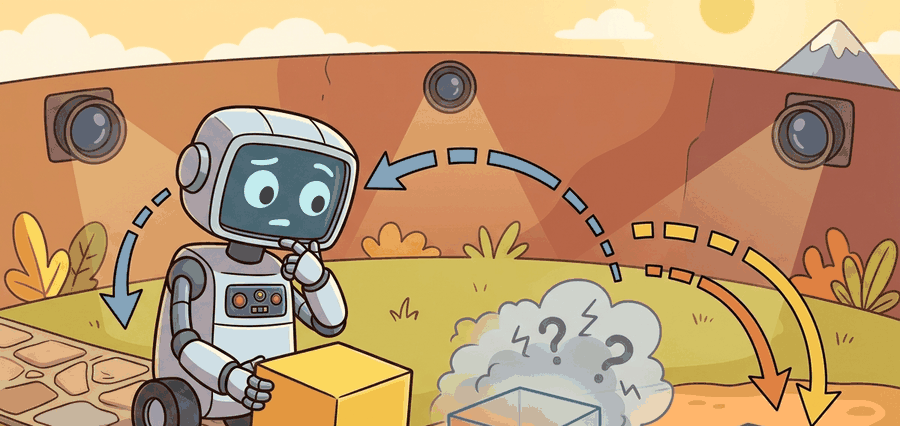

"A world model becomes actionable the moment you let the next action change the future it predicts."
An Action-Conditioned Predictor

V-JEPA 2 matters because it turns a passive video representation into a planning-capable latent model. The key move is post-training an action-conditioned predictor on robot interaction data so the latent future depends on what the robot actually does.
From Passive Prediction To Action-Conditioned Rollouts
Video pretraining alone can tell you which latent futures are plausible, but it cannot tell you which future follows from a chosen action sequence. That distinction matters in robotics. A representation that knows a mug can move is not enough; a planner must know which latent mug motion corresponds to closing the gripper, rotating the wrist, or aborting the reach.
V-JEPA 2 addresses this by keeping the self-supervised video backbone and then post-training an action-conditioned world model, often denoted V-JEPA 2-AC in the paper. The latent transition becomes:
$$ z_{t+1} = h_\phi(z_t, a_t), \qquad \hat z_{t+1:t+H} = h_\phi(z_t, a_{t:t+H-1}) $$
where $z_t$ comes from the pretrained video encoder and the action-conditioned head learns how control inputs move the latent state across a horizon $H$.
The pretrained encoder supplies general visual structure; the action-conditioned head supplies controllability. Without both, you do not yet have a planning model, only a rich feature extractor or a passive predictor.
Planning Objective
For image-goal planning, the planner searches over candidate action sequences and scores them by how close the predicted terminal latent is to the goal latent:
$$ a_{t:t+H-1}^\star = \arg\min_{a_{t:t+H-1}} \left\lVert h_\phi(z_t, a_{t:t+H-1}) - z_g \right\rVert_2^2 + \lambda C(a_{t:t+H-1}) $$
Here $z_g$ is the goal-image embedding and $C$ is any extra action cost, such as smoothness, collision proxy, or control effort. This looks like model-predictive control in latent space, because that is exactly what it is. The novelty is that the dynamics live in a self-supervised latent representation rather than an analytic state space.
1. Encode the current camera observation and the goal image into latent states.
2. Sample or optimize a batch of candidate action sequences.
3. Roll each sequence forward through the action-conditioned latent model.
4. Score each rollout by terminal goal distance plus feasibility cost.
5. Execute the first action or short prefix, then replan from the new observation.
Worked Planning Probe
Code Fragment 40.3.1 demonstrates the core idea with a tiny latent transition model. The point is to make latent-space goal planning concrete before discussing the full V-JEPA 2 system.
# Roll a latent state forward under candidate actions and score
# each plan by terminal distance to a goal embedding.
import numpy as np
z0 = np.array([0.2, -0.1], dtype=np.float32)
zg = np.array([0.9, 0.4], dtype=np.float32)
candidates = [
np.array([[0.20, 0.10], [0.18, 0.09], [0.15, 0.08]], dtype=np.float32),
np.array([[0.10, 0.18], [0.11, 0.17], [0.12, 0.16]], dtype=np.float32),
]
def rollout(z, actions):
for action in actions:
z = z + 0.6 * action
return z
scores = []
for idx, action_seq in enumerate(candidates):
z_terminal = rollout(z0.copy(), action_seq)
score = float(np.linalg.norm(z_terminal - zg))
scores.append((idx, z_terminal.round(3).tolist(), round(score, 3)))
print(scores)[(0, [0.518, 0.034], 0.53), (1, [0.398, 0.206], 0.54)]The expected output is a ranked list of candidates with terminal latent states and distances. If two plans tie closely, that is not a bug, it is the planner telling you the current latent dynamics do not yet separate the futures strongly enough.
The hand-built latent rollout takes about 20 lines. A maintained PyTorch implementation with the released V-JEPA 2 code can evaluate batches of candidate action sequences in a few lines once the model and preprocessing stack are loaded. The library path absorbs batching, checkpoint loading, and GPU execution; the small probe keeps the planning objective inspectable.
Why Small Robot Data Can Be Enough
The V-JEPA 2 paper's claim is not that 62 hours of robot data solve robotics by itself. The narrower claim is that a very large passive video prior can make the action-conditioning stage dramatically more sample-efficient. The robot data no longer has to teach the model all of visual world structure; it mainly has to teach how this embodiment's actions perturb that structure.
This division of labor is scientifically interesting because it is one of the clearest examples in the book where web-scale passive observation and small-scale interaction data play genuinely different roles.
A lab wants zero-shot image-goal pick-and-place on two Franka setups with slightly different cameras. They reuse the video-pretrained encoder across both sites and only rely on the action-conditioned post-training to map arm motions into latent futures. The deployment bet is that geometry, motion priors, and object persistence transfer broadly, while the action-conditioned layer carries the local embodiment details.
Implementation Audit
Code Fragment 2 below defines the minimum audit record for an action-conditioned latent planning run.
# Save the contract for a V-JEPA 2 action-conditioned rollout test.
# A real experiment should keep the robot-data source and replanning
# horizon next to the final success metric.
from dataclasses import asdict, dataclass
@dataclass
class LatentPlanningAudit:
backbone: str
action_head: str
robot_data_hours: float
goal_type: str
replanning_horizon: int
metric: str
def as_row(self) -> dict[str, object]:
return asdict(self)
audit = LatentPlanningAudit(
backbone="vjepa2_base",
action_head="vjepa2_ac",
robot_data_hours=62.0,
goal_type="image_goal",
replanning_horizon=8,
metric="goal_reached_without_intervention",
)
print(audit.as_row()){'backbone': 'vjepa2_base', 'action_head': 'vjepa2_ac', 'robot_data_hours': 62.0, 'goal_type': 'image_goal', 'replanning_horizon': 8, 'metric': 'goal_reached_without_intervention'}The expected output is a compact audit dictionary. If your own experiment log cannot at least name these fields, the later success rate will be difficult to interpret.
The model can look impressive in latent-goal scoring and still fail on hardware because the latent dynamics under-model contact, latency, or camera-action calibration drift. Consider a specific case: during a pick task the gripper makes contact with a cup at step 4 of an 8-step plan. The latent encoder, trained on passive video without haptic signals, has no representation of contact force; the predicted $z_{t+1}$ treats the blocked wrist motion as if free space continued. The planner scores the remaining rollout confidently, yet the arm stalls in place. The offline goal-distance score never sees this failure because the mismatch occurs in the physical gap between the learned latent dynamics and the real world. This is why intervention logging and receding-horizon replanning are essential: the replanning loop catches state divergence the offline metric cannot.
The action-conditioned head learns a mapping from (latent state, action) to next latent state using the robot interaction dataset. That mapping is only reliable inside the joint distribution of states and actions seen during post-training. Three specific failure regimes emerge: (1) Out-of-distribution actions: a motion primitive not present in the 62-hour dataset (say, a rapid lateral sweep) has no grounded latent transition, so the model extrapolates using structure inherited from passive video, which may be geometrically plausible but dynamically wrong. (2) Long horizons: compounding latent prediction errors grow with horizon $H$; a planner using $H=8$ may be reliable while $H=20$ drifts beyond the training distribution of rollout lengths. (3) Task-irrelevant latent dimensions: the pretrained encoder may collapse dimensions that matter for control (subtle wrist angle, cable drag) if those dimensions carried little information for passive video prediction. The action-conditioned head then has no axis to express that variation. Understanding these three regimes shapes how you set the replanning interval, the action-candidate distribution, and the robot-data collection strategy.
V-JEPA 2 pushes a frontier that many groups are now exploring: can internet-scale video priors plus a modest amount of embodiment-specific data produce planners that are both data-efficient and physically grounded? The open question is where that strategy breaks, especially for force-sensitive manipulation, multi-step tool use, and fast contact transitions.
Compare this latent replanning loop with the optimization-based world-model control in Chapter 37. For direct generative planners that sample action sequences instead of rolling a JEPA latent model forward, see Section 41.1.
Can you explain which parts of V-JEPA 2 come from passive video pretraining and which parts require robot interaction data? Can you also say why replanning is still needed even when the latent model is strong?
The cleanest way to read V-JEPA 2 is as a two-stage decomposition: learn general predictive visual structure first, then learn how your action space moves that structure. For embodied AI, that is attractive because it separates abundant passive data from scarce interaction data while still keeping planning in the loop.
V-JEPA 2 is the moment a passive observer stops narrating the scene and starts asking what the arm should do next.
V-JEPA 2 becomes a planner by adding action-conditioned latent rollouts on top of self-supervised video pretraining. Its real contribution is not latent prediction alone, but the claim that small robot-data budgets can teach controllability on top of broad visual priors.
Design a closed-loop benchmark for image-goal planning with V-JEPA 2-AC. Specify the goal representation, candidate-action generator, replanning interval, intervention rule, and one failure type that could pass offline goal-distance scoring but fail on hardware.
Bibliography & Further Reading
Primary References And Tools
LeCun, Y.. "A Path Towards Autonomous Machine Intelligence." (2022). https://openreview.net/forum?id=BZ5a1r-kVsf
This position paper frames JEPA as a path toward predictive abstract representations. It gives the conceptual motivation for predicting in representation space rather than reconstructing every sensory detail.
Assran, M. et al.. "Self-Supervised Learning from Images with a Joint-Embedding Predictive Architecture." (2023). https://arxiv.org/abs/2301.08243
I-JEPA is the image-based foundation for the joint-embedding predictive idea. It is useful for understanding masking, target encoders, and representation prediction before moving to video.
Bardes, A. et al.. "V-JEPA: Revisiting Feature Prediction for Learning Visual Representations from Video." (2024). https://arxiv.org/abs/2404.08471
V-JEPA extends JEPA-style prediction to video. It grounds the chapter's distinction between predicting latent features and reconstructing pixel-level futures.
Meta AI. "Introducing the V-JEPA 2 World Model and New Benchmarks." (2025). https://ai.meta.com/blog/v-jepa-2-world-model-benchmarks/
The official V-JEPA 2 release discusses video-trained world models, benchmarks, and zero-shot robot-control claims. The chapter treats these as important frontier claims that need task-level verification.
Assran, M. et al.. "V-JEPA 2: Self-Supervised Video Models Enable Understanding, Prediction and Planning." (2025). https://arxiv.org/abs/2506.09985
The V-JEPA 2 paper connects self-supervised video pretraining with action-conditioned latent planning. It is the central technical reference for this chapter's JEPA-to-control bridge.